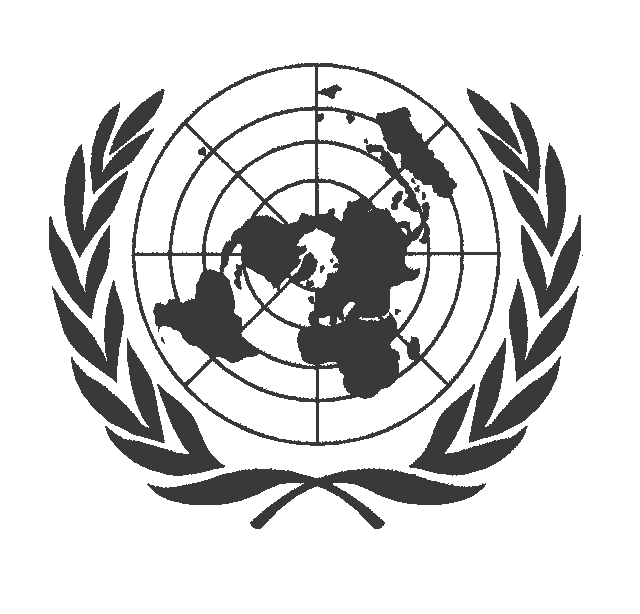

Tribunaux français
Composés des tribunaux administratif, cours d’appel et de cassation. Les jugements des tribunaux administratifs qui sont susceptibles de recours sont déférés en appel devant la cour administrative d'appel. Certains juges accordent un sexe neutre aux personnes qui le demandent, d’autres pensent que la création d’un nouveau sexe est du ressort du pouvoir judiciaire.
Parlement
Organe législatif français composé de deux chambres, le Sénat et l’Assemblée nationale. Il consulte les médecins et les associations de défense des intersexes. Le parlement aurait le moyen de reconnaître un sexe neutre.
Conseil de l’Europe
À ne pas confondre avec le conseil de l’Union Européenne. S’intéresse à tous les domaines de la vie courante excepté la défense. Peut être appelé devant les tribunaux français, mais la Cour de Cassation et le droit français sont prioritaires: le conseil de l'europe ne peut émettre que des recommandations. Depuis 2003, se préoccupe du l’intégrité physique des nouveaux nés intersexes, et recommande de ne pas les opérer.
Cours de justice de l’UE
A émis des lignes directrices en faveur de la reconnaissance d’un sexe neutre en 2013. En vertu de la libre circulation des personnes, tous les États de l’UE devraient reconnaître les états civils neutres existant dans certains pays.

Comités de l’ONU
Juge les interventions sur les nouveaux nés mutilantes. A condamné la France à trois reprises (par le comité des Droits de l’Enfant, contre la torture et l’élimination de la discrimination à l’égard des femmes).
Communauté intersexué
Les personnes intersexués participent évidement au débat, individuelement ou en se regroupant dans des comités et associations. Des personalités publiques revendiquent leurs particularités, comme le mannequin Gaby Odiele qui s'est publiquement déclaré intersexe en janvier 2017. D'autres sont moins connus mais ont une influence non négligeable en témoignant à propos de leur vie.
Associations
Les principales associations sont l’OII (Organisation Internationale des Intersexués) et la CIA (Collectifs des Intersexes et de leurs Alliés). On peut aussi citer Hes, interAct, hétéroclité. Elles sont quasiment toutes anti-opérations et n’hésitent pas à utiliser des termes sanglant pour les désigner.
Journalistes
Les journalistes impliqués dans le débat, qui s’expriment sur leurs blogs individuels. On peut citer le journaliste “C’est la vie” Marine Le Breton, le journaliste Vietnamien Ngan An. Dans les articles de journaux comme dans les articles électroniques, les journalistes essayent de faire découvrir au grand public le sujet de l’intersexe généralement inconnu. Un sujet rentable et qui n’est cité que parallèlement avec d’autres événements.
Réseaux sociaux
Sur les réseaux sociaux, les militants et les personnes intersexes forment des groupes pour s’échanger les expériences. Sur ces groupes,généralement privés, et comme sur les forums, des personnes s’infiltrent pour commenter vulgairement ces expériences: ce sont les "trolls".
Blogs
Espace libre où les internautes peuvent publier leurs propres articles. Les publications sont plus directes et traitent le sujet de manière claire et compatible avec la position de l’écrivain vis-à-vis du sujet.
Medecins
Les obstétriciens et les urologues opèrent les nouveaux-nés. Les urologues peuvent opérer plus tardivement. Les endoctrinologues se chargent du traitement hormonal du patient.
Psychiatres
Analysent le développement moral des enfants intersexes et théorise le rôle de genre. Beaucoup de spécialistes pensent que dire à l’enfant qu’il est intersexe au cours de la puberté peut créer un trouble psychique. John Money fut un psychiatre notable dans notre thématique.